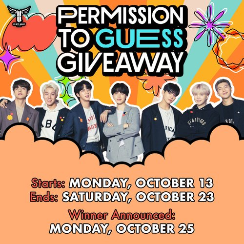

Fan Organized Activities
- A variety of Giveaway Events
-

https://www.usbtsarmy.com/permission-to-guess
To celebrate the Permission to Dance On Stage Online Concert, the US BTS ARMY Organization was holding a fun event for ARMYs!
- Penn America
-

https://pen.org/issue/online-abuse/
This is a group called PEN America, where they promote people's freedom to write, while protecting people from abuse. They also educate people about online abuse through many mediums such as projects and commentaries, while suggesting experts people may connect to if they have any questions or concerns regarding online abuse.
- Equality lab
-

https://www.equalitylabs.org/digitalsecurityresource#security-101
This is an organization called Equality Lab, where they give several resources and training for digital security. People may reach out for help on any issues regarding harms that may result from digital security.
- Access now
-

https://www.accessnow.org/about-us/
This is organization called Access Now, where they also give helps regarding privacy, freedom of expression, digital security, business and human rights, and net discrimination. People also can achieve help from here, including global hotline that can reach out to experts in these areas.